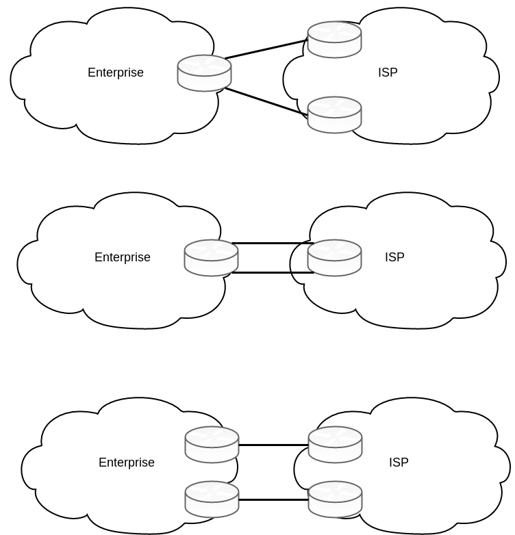
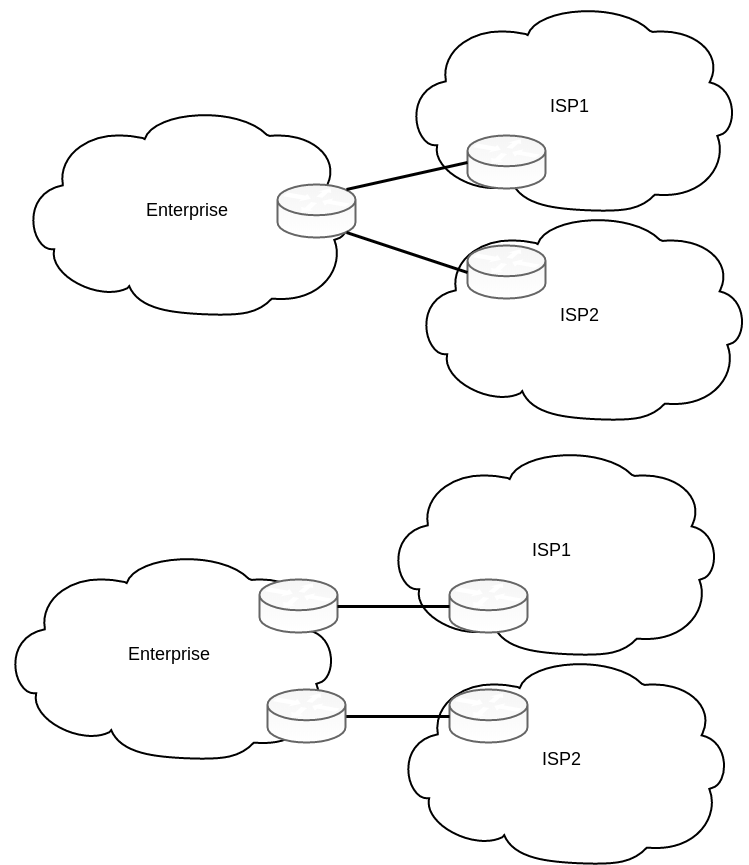
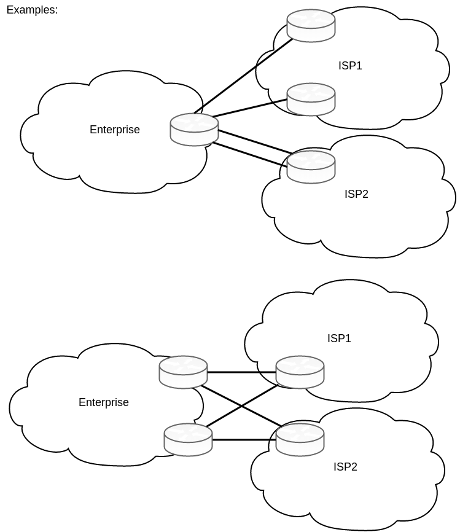
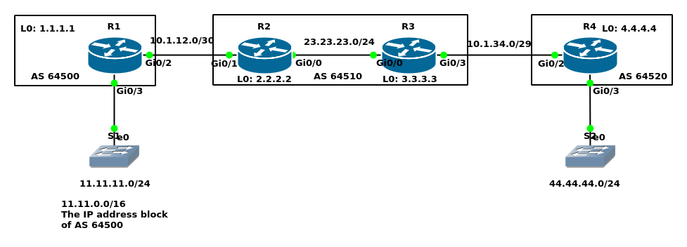
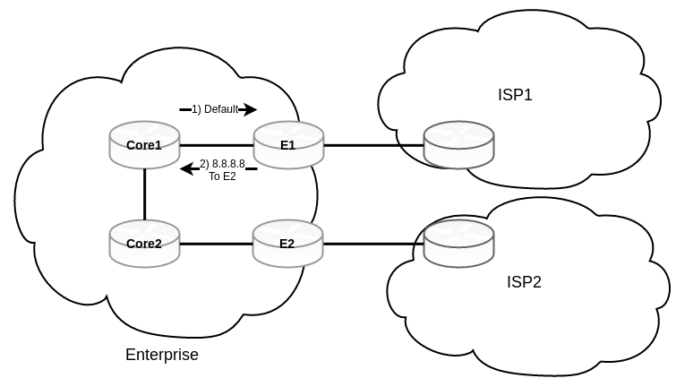

Border Gateway Protocol (BGP)
- Version 4
- The main function of BGP is to provide path vector routing between different autonomous systems (eBGP)
- Similar to distance vector because for each prefix we learn about, we learn how far away it is (distance) and which way we go to get there (vector).
- Different than the distance vector because for each prefix we have a record of the entire AS path. And also, there is no one clear “metric” in BGP. On BGP we rely on different BGP path attributes that ultimately lead into the selection of the best path.
- BGP uses AS Path for 2 key jobs:
- Select the path (shortest AS path)
- Preventing routing loops
- BGP uses AS Path for 2 key jobs:
- eBGP tells the routers how to get between various AS’s. Once the packet gets to the AS, BGP’s job is done and further routing is handled internal to the AS.
- Interior BGP (iBGP)
- Helps propagate eBGP learned routes between edge routers.
- Typical in multi-homing scenarios.
- BGP is a TCP application operating on port 179.
- Important when trying to run BGP through firewalls.
- Neighborship forms even to non-directly connected routers. So, the neighbors can be in different subnets.
- Network Layer Reachability Information (NLRI), which is unique to BGP version 4, means length and prefix. For example:
- /25 (the length), 204.149.16.128 (prefix)
- /23, 206.134.32
- /8, 10
BGP vs IGPs
Similarities:
- BGP does advertise subnets
- BGP does establish a neighbor relationship
- 3 tables like OSPF and EIGRP
- neighborship table:
show ip bgp summary - topology table:
show ip bgp - routing table:
show ip route bgp
- neighborship table:
Differences
- BGP does not require neighbors to be attached to the same subnet.
- Metric in IGPs vs Path attributes in BGP
- Fast convergence in IGPs vs scalability in BGP
- Advertising prefix/length in IGPs vs NLRI in BGP
eBGP vs iBGP
eBGP
- Peering between different AS’s
- Administrative distance of 20
- When advertising, a BGP router updates the AS_PATH PA
- Next-hop changes!
- TTL=1: because usually two ASs are directly connected
iBGP
- Peering between routers in same AS
- Administrative Distance of 200
- When advertising, a BGP router does not update the AS_PATH PA
- Next-hop does not change by default. There are 2 solutions which we will discuss later
- An iBGP learned route cannot be sent to an iBGP neighbor
- So, iBGP requires a full mesh peering (old school way)
- In iBGP TTL is not limited to 1, because it is probable that we have many hops in between.
Why BGP?
- Service Provider perspective:
- Scalable
- Private routing between AS’s
- Manage connections to MPLS networks. MPLS VPN does not allow us to run IGPs between our branches. We have two solutions, running a tunnel or using BGP for private use. In this case we use AS 64512 to 65534.
- Customer perspective
- Get a block of public IP addresses independent from the service provider
- When 2 companies want to merge, instead of directly route redistribution, BGP makes it a very good translation in between two companies with different routing protocols.
- Design scenarios:
- Single-homed: We have 1 ISP and 1 link to the ISP, the only reason is to get a block of IP addresses independent from the service provider
- Dual-homed: We have 1 ISP and more than one link to the ISP

- Single-multihomed: We have more than 1 ISP, but one link per ISP

- Dual-multihomed: We have more than 1 ISP and more than one link per ISP

ISPs give you three basic options for what routes the ISP advertises:
- Full update: usually between service providers
- Default route only: When we only want to take advantage of ISP-independent IP address block.
- Partial updates + default route: when we want to do PBR
Configuring basic BGP peering

Base configuration
R1:hostname R1 ! interface Loopback0 ip address 1.1.1.1 255.255.255.255 ! interface GigabitEthernet0/2 ip address 10.1.12.1 255.255.255.252 ! interface GigabitEthernet0/3 ip address 11.11.11.1 255.255.255.0R2:
hostname R2 ! interface Loopback0 ip address 2.2.2.2 255.255.255.255 ! interface GigabitEthernet0/0 ip address 23.23.23.2 255.255.255.0 ! interface GigabitEthernet0/1 ip address 10.1.12.2 255.255.255.252R3:
hostname R3 ! interface Loopback0 ip address 3.3.3.3 255.255.255.255 ! interface GigabitEthernet0/0 ip address 23.23.23.3 255.255.255.0 ! interface GigabitEthernet0/3 ip address 10.1.34.3 255.255.255.248R4:
hostname R4 ! interface Loopback0 ip address 4.4.4.4 255.255.255.255 ! interface GigabitEthernet0/2 ip address 10.1.34.4 255.255.255.248 ! interface GigabitEthernet0/3 ip address 44.44.44.1 255.255.255.0
Bringing up eBGP neighborship
R1(config)#ip route 2.2.2.2 255.255.255.255 10.1.12.2 R1(config)#router bgp 64500 R1(config-router)#neighbor 2.2.2.2 remote-as 64510 R1(config-router)#neighbor 2.2.2.2 update-source loopback 0 R1(config-router)#neighbor 2.2.2.2 ebgp-multihop 2
R2(config)#ip route 1.1.1.1 255.255.255.255 10.1.12.1 R2(config)#router bgp 64510 R2(config-router)#neighbor 1.1.1.1 remote-as 64500 R2(config-router)#neighbor 1.1.1.1 update-source loopback 0 R2(config-router)#neighbor 1.1.1.1 ebgp-multihop 2
R3(config)#ip route 4.4.4.4 255.255.255.255 10.1.34.4 R3(config)#router bgp 64510 R3(config-router)#neighbor 4.4.4.4 remote-as 64520 R3(config-router)#neighbor 4.4.4.4 update-source loopback 0 R3(config-router)#neighbor 4.4.4.4 ebgp-multihop 2
R4(config)#ip route 3.3.3.3 255.255.255.255 10.1.34.3 R4(config)#router bgp 64520 R4(config-router)#neighbor 3.3.3.3 remote-as 64510 R4(config-router)#neighbor 3.3.3.3 update-source loopback 0 R4(config-router)#neighbor 3.3.3.3 ebgp-multihop 2Neighborship verification
R1#show ip bgp summary BGP router identifier 1.1.1.1, local AS number 64500 BGP table version is 1, main routing table version 1 Neighbor V AS MsgRcvd MsgSent TblVer InQ OutQ Up/Down State/PfxRcd 2.2.2.2 4 64510 5 5 1 0 0 00:01:27 0 R1#show tcp brief TCB Local Address Foreign Address (state) 0D8D5540 1.1.1.1.64573 2.2.2.2.179 ESTAB
BGP neighbor states
- Idle: administratively down or waiting for retry
- Connect: waiting for TCP connection
- Active: TCP connection has been completed
- Opensent: TCP connection exists and a BGP Open message is sent to the peer
- Openconfirm: Open message sent and received
- Established: All neighbor parameters match, the peers can now exchange Update messages
R1#debug ip bgp R1(config-router)#neighbor 2.2.2.2 shutdown R1(config-router)# *Jan 21 02:18:05.505: BGP: 2.2.2.2 went from Established to Closing *Jan 21 02:18:05.507: %BGP-3-NOTIFICATION: sent to neighbor 2.2.2.2 6/2 (Administrative Shutdown) 0 bytes *Jan 21 02:18:05.508: BGP: ses global 2.2.2.2 (0xD8D5350:1) Send NOTIFICATION 6/2 (Administrative Shutdown) 0 bytes *Jan 21 02:18:05.510: %BGP-5-NBR_RESET: Neighbor 2.2.2.2 reset (Admin. shutdown) *Jan 21 02:18:05.529: BGP: nbr_topo global 2.2.2.2 IPv4 Unicast:base (0xD8D5350:1) NSF delete stale NSF not active *Jan 21 02:18:05.530: BGP: nbr_topo global 2.2.2.2 IPv4 Unicast:base (0xD8D5350:1) NSF no stale paths state is NSF not active *Jan 21 02:18:05.530: BGP: nbr_topo global 2.2.2.2 IPv4 Unicast:base (0xD8D5350:1) Resetting ALL counters. *Jan 21 02:18:05.532: BGP: 2.2.2.2 closing *Jan 21 02:18:05.534: BGP: ses global 2.2.2.2 (0xD8D5350:1) Session close and reset neighbor 2.2.2.2 topostate *Jan 21 02:18:05.535: BGP: nbr_topo global 2.2.2.2 IPv4 Unicast:base (0xD8D5350:1) Resetting ALL counters. *Jan 21 02:18:05.538: BGP: 2.2.2.2 went from Closing to Idle *Jan 21 02:18:05.539: %BGP-5-ADJCHANGE: neighbor 2.2.2.2 Down Admin. shutdown *Jan 21 02:18:05.539: %BGP_SESSION-5-ADJCHANGE: neighbor 2.2.2.2 IPv4 Unicast topology base removed from session Admin. shutdown *Jan 21 02:18:05.540: BGP: ses global 2.2.2.2 (0xD8D5350:1) Removed topology IPv4 Unicast:base *Jan 21 02:18:05.541: BGP: ses global 2.2.2.2 (0xD8D5350:1) Removed last topology *Jan 21 02:18:05.542: BGP: nbr global 2.2.2.2 Active open failed - shutdown *Jan 21 02:18:05.542: BGP: nbr global 2.2.2.2 Active open failed - shutdown R1(config-router)#no neighbor 2.2.2.2 shutdown R1(config-router)# *Jan 21 02:18:42.338: BGP: nbr global 2.2.2.2 Open active delayed 1024ms (0ms max, 60% jitter) *Jan 21 02:18:42.910: BGP: 2.2.2.2 active went from Idle to Active *Jan 21 02:18:42.911: BGP: 2.2.2.2 open active, local address 1.1.1.1 *Jan 21 02:18:42.928: BGP: ses global 2.2.2.2 (0xD8D6D90:0) act Adding topology IPv4 Unicast:base *Jan 21 02:18:42.930: BGP: ses global 2.2.2.2 (0xD8D6D90:0) act Send OPEN *Jan 21 02:18:42.931: BGP: ses global 2.2.2.2 (0xD8D6D90:0) act Building Enhanced Refresh capability *Jan 21 02:18:42.932: BGP: 2.2.2.2 active went from Active to OpenSent *Jan 21 02:18:42.933: BGP: 2.2.2.2 active sending OPEN, version 4, my as: 64500, holdtime 180 seconds, ID 1010101 *Jan 21 02:18:42.960: BGP: 2.2.2.2 active rcv message type 1, length (excl. header) 38 *Jan 21 02:18:42.960: BGP: ses global 2.2.2.2 (0xD8D6D90:0) act Receive OPEN *Jan 21 02:18:42.961: BGP: 2.2.2.2 active rcv OPEN, version 4, holdtime 180 seconds *Jan 21 02:18:42.962: BGP: 2.2.2.2 active rcv OPEN w/ OPTION parameter len: 28 *Jan 21 02:18:42.962: BGP: 2.2.2.2 active rcvd OPEN w/ optional parameter type 2 (Capability) len 6 *Jan 21 02:18:42.962: BGP: 2.2.2.2 active OPEN has CAPABILITY code: 1, length 4 *Jan 21 02:18:42.962: BGP: 2.2.2.2 active OPEN has MP_EXT CAP for afi/safi: 1/1 *Jan 21 02:18:42.963: BGP: 2.2.2.2 active rcvd OPEN w/ optional parameter type 2 (Capability) len 2 *Jan 21 02:18:42.963: BGP: 2.2.2.2 active OPEN has CAPABILITY code: 128, length 0 *Jan 21 02:18:42.963: BGP: 2.2.2.2 active OPEN has ROUTE-REFRESH capability(old) for all address-families *Jan 21 02:18:42.963: BGP: 2.2.2.2 active rcvd OPEN w/ optional parameter type 2 (Capability) len 2 *Jan 21 02:18:42.964: BGP: 2.2.2.2 active OPEN has CAPABILITY code: 2, length 0 *Jan 21 02:18:42.964: BGP: 2.2.2.2 active OPEN has ROUTE-REFRESH capability(new) for all address-families *Jan 21 02:18:42.965: BGP: 2.2.2.2 active rcvd OPEN w/ optional parameter type 2 (Capability) len 2 *Jan 21 02:18:42.965: BGP: 2.2.2.2 active OPEN has CAPABILITY code: 70, length 0 *Jan 21 02:18:42.965: BGP: ses global 2.2.2.2 (0xD8D6D90:0) act Enhanced Refresh cap received in open message *Jan 21 02:18:42.966: BGP: 2.2.2.2 active rcvd OPEN w/ optional parameter type 2 (Capability) len 6 *Jan 21 02:18:42.966: BGP: 2.2.2.2 active OPEN has CAPABILITY code: 65, length 4 *Jan 21 02:18:42.966: BGP: 2.2.2.2 active OPEN has 4-byte ASN CAP for: 64510 *Jan 21 02:18:42.967: BGP: 2.2.2.2 active rcvd OPEN w/ remote AS 64510, 4-byte remote AS 64510 *Jan 21 02:18:42.969: BGP: 2.2.2.2 active went from OpenSent to OpenConfirm *Jan 21 02:18:42.978: BGP: ses global 2.2.2.2 (0xD8D6D90:0) act read request no-op *Jan 21 02:18:42.987: BGP: 2.2.2.2 active went from OpenConfirm to Established *Jan 21 02:18:42.987: BGP: ses global 2.2.2.2 (0xD8D6D90:1) act Assigned ID *Jan 21 02:18:42.988: BGP: ses global 2.2.2.2 (0xD8D6D90:1) Up *Jan 21 02:18:42.989: %BGP-5-ADJCHANGE: neighbor 2.2.2.2 Up
Injecting route into BGP
We can inject routes using network command, redistribution, summarization, or default origination.
Using network command
- In IGPs when we use
networkcommand, we enable that routing protocol on the matching interfaces with the network command. But in BGP when we usenetworkcommand, the router looks in its routing table and if the equivalent prefix/length exists, puts that into the local BGP table.
For example, you have the following routes in your routing table C 10.10.10.0/24 S 10.10.11.0/30 D 10.10.12.0/28 Then you issue network 10.10.0.0 mask 255.255.0.0 command. Here nothing will be advertised since we do not have a 10.10.0.0/16 network.
- Solution?
- Add this static route
S 10.10.0.0/16 Null0. This is better than the second and third method below. - In the example above we can teach the router to learn 10.10.0.0/16 from EIGRP summarization.
- use of
auto-summaryadvertises the subordinate routes (default isno auto-summary). Do not use this option. Just learn it as a concept.
- Add this static route
Using redistribute command
Configuration: Suppose 11.11.0.0/16 is IP address block for AS 64500.
Here, I redistribute 11.11.0.0 (null 0) into BGP 64500R1(config)#ip route 11.11.0.0 255.255.0.0 null 0 R1(config)#router bgp 64500 R1(config-router)#redistribute static route-map RDtoBGP R1(config)#route-map RDtoBGP permit R1(config-route-map)#match ip address STATIC R1(config-route-map)#description Because I may have multiple static routes in routing table of R1, I only select 11.11.0.0 to null0 route. % Description too long. Truncated to 100 characters. R1(config)#ip access-list standard STATIC R1(config-std-nacl)#permit 11.11.0.0 0.0.255.255 R1(config-std-nacl)#exitLet us verify on R2
R2#show ip route bgp
11.0.0.0/16 is subnetted, 1 subnets
B 11.11.0.0 [20/0] via 1.1.1.1, 00:00:31
Let us advertise 23.23.23.0 into BGP on R2. Here I choose the network command
R2(config)#router bgp 64510 R2(config-router)#network 23.23.23.0 mask 255.255.255.0
R1#show ip route bgp
23.0.0.0/24 is subnetted, 1 subnets
B 23.23.23.0 [20/0] via 2.2.2.2, 00:00:29
Then, I configured R3 and R4 using network command which I do not repeat here.
Using summarization
BGP does not use a metric to find the best path. It uses Path Attributes (PA). By default, the shortest AS_PATH PA is the best path. AS_PATH PA consists of up to 4 components:
- AS_SEQ: The most commonly used
- AS_SET:
- AS_CONFED_SEQ
- AS_CONFED_SET
The aggregate-address command can create a summary route. If we summarize addresses with
- the same AS_SEQ, the summary address will have the same AS_SEQ
- different AS_SEQs, then the summary AS_SEQ will be
Null0- This can lead to a loop. The solution is AS_SET. AS_SET gets all subnets’ ASNs and holds an unordered list of them.
Adding default routes to BGP
- By injecting the default route using
networkcommand - By injecting the default route using
redistributecommand- additional command
default-information originateis then needed
- additional command
- By injecting the default route using
neighbor id default-information [route-map name]command
Internal BGP Configuration
Let us see why iBGP is needed in this scenario. As we can see below, R4 does not have any route to reach 11.11.0.0/16 on AS 64500R4#show ip route bgp
23.0.0.0/24 is subnetted, 1 subnets
B 23.23.23.0 [20/0] via 3.3.3.3, 00:05:09
Let us see why iBGP is needed generally:
- Service Provider: to become a transit AS
- Customer perspective: to allow routers in the same AS to reach the same conclusion about the better path through which to send packets for each Internet destination.
Next-hop reachability issue iBGP does not change the next-hop address. When R2 learns about 11.11.0.0/24 from R1, it knows that the next-hop to reach 11.11.0.0/24 is R1. When in iBGP R2 wants to advertise the network to R3, it does not update the next-hop to itself (R2). It teaches R3 about 11.11.0.0/24 but with R1’s address as the next-hop, which R3 does not know how to reach. So there are 2 solutions:
- Let R3 know how to reach R1
- Better solution is to tell the iBGP to update the next-hop for R3 using
R2(config-router)#neighbor 3.3.3.3 next-hop-self
R2(config)#router ospf 1 R2(config-router)#network 23.23.23.2 0.0.0.0 area 0 R2(config-router)#network 2.2.2.2 0.0.0.0 area 0 R2(config)#router bgp 64510 R2(config-router)#neighbor 3.3.3.3 remote-as 64510 R2(config-router)#neighbor 3.3.3.3 update-source loopback 0 R2(config-router)#neighbor 3.3.3.3 next-hop-self
R3(config-router)#network 23.23.23.3 0.0.0.0 area 0 R3(config-router)#network 3.3.3.3 0.0.0.0 area 0 R3(config-router)#do pi 2.2.2.2 source 3.3.3.3 Packet sent with a source address of 3.3.3.3 !!!!! Success rate is 100 percent (5/5), round-trip min/avg/max = 3/4/7 ms R3(config-router)#router bgp 64510 R3(config-router)#neighbor 2.2.2.2 update-source loopback 0 R3(config-router)#neighbor 2.2.2.2 next-hop-selfVerification
R1#show ip route bgp
Gateway of last resort is not set
23.0.0.0/24 is subnetted, 1 subnets
B 23.23.23.0 [20/0] via 2.2.2.2, 00:56:03
44.0.0.0/24 is subnetted, 1 subnets
B 44.44.44.0 [20/0] via 2.2.2.2, 00:03:52
R4#show ip bgp
BGP table version is 4, local router ID is 4.4.4.4
Status codes: s suppressed, d damped, h history, * valid, > best, i - internal,
r RIB-failure, S Stale, m multipath, b backup-path, f RT-Filter,
x best-external, a additional-path, c RIB-compressed,
Origin codes: i - IGP, e - EGP, ? - incomplete
RPKI validation codes: V valid, I invalid, N Not found
Network Next Hop Metric LocPrf Weight Path
*> 11.11.0.0/16 3.3.3.3 0 64510 64500 ?
*> 23.23.23.0/24 3.3.3.3 0 0 64510 i
*> 44.44.44.0/24 0.0.0.0 0 32768 i
R2#show ip bgp summary BGP router identifier 2.2.2.2, local AS number 64510 BGP table version is 4, main routing table version 4 3 network entries using 432 bytes of memory 4 path entries using 320 bytes of memory 4/3 BGP path/bestpath attribute entries using 608 bytes of memory 2 BGP AS-PATH entries using 48 bytes of memory 0 BGP route-map cache entries using 0 bytes of memory 0 BGP filter-list cache entries using 0 bytes of memory BGP using 1408 total bytes of memory BGP activity 3/0 prefixes, 4/0 paths, scan interval 60 secs Neighbor V AS MsgRcvd MsgSent TblVer InQ OutQ Up/Down State/PfxRcd 1.1.1.1 4 64500 121 123 4 0 0 01:46:46 1 3.3.3.3 4 64510 17 16 4 0 0 00:08:44 2
R3#show ip bgp
BGP table version is 4, local router ID is 3.3.3.3
Status codes: s suppressed, d damped, h history, * valid, > best, i - internal,
r RIB-failure, S Stale, m multipath, b backup-path, f RT-Filter,
x best-external, a additional-path, c RIB-compressed,
Origin codes: i - IGP, e - EGP, ? - incomplete
RPKI validation codes: V valid, I invalid, N Not found
Network Next Hop Metric LocPrf Weight Path
*>i 11.11.0.0/16 2.2.2.2 0 100 0 64500 ?
* i 23.23.23.0/24 2.2.2.2 0 100 0 i
*> 0.0.0.0 0 32768 i
*> 44.44.44.0/24 4.4.4.4 0 0 64520 i
R3#show ip route
Gateway of last resort is not set
2.0.0.0/32 is subnetted, 1 subnets
O 2.2.2.2 [110/2] via 23.23.23.2, 00:12:37, GigabitEthernet0/0
3.0.0.0/32 is subnetted, 1 subnets
C 3.3.3.3 is directly connected, Loopback0
4.0.0.0/32 is subnetted, 1 subnets
S 4.4.4.4 [1/0] via 10.1.34.4
10.0.0.0/8 is variably subnetted, 2 subnets, 2 masks
C 10.1.34.0/29 is directly connected, GigabitEthernet0/3
L 10.1.34.3/32 is directly connected, GigabitEthernet0/3
11.0.0.0/16 is subnetted, 1 subnets
B 11.11.0.0 [200/0] via 2.2.2.2, 00:08:25
23.0.0.0/8 is variably subnetted, 2 subnets, 2 masks
C 23.23.23.0/24 is directly connected, GigabitEthernet0/0
L 23.23.23.3/32 is directly connected, GigabitEthernet0/0
44.0.0.0/24 is subnetted, 1 subnets
B 44.44.44.0 [20/0] via 4.4.4.4, 00:55:55
Note
- In this example we had 2 routers in iBGP.
- When a router learns routes from an iBGP peer, that router does not advertise the same routes to another iBGP peer (to prevent loop). Imagine we have a router in between of our iBGP peers and our iBGP peers are not physically connected together. In this case, we have to run iBGP full mesh for all routers in between.
Let us see the example below.

Imagine that the best route to reach 8.8.8.8 is from E2. A packet arrives at Core1, which has a default route, so it gives the packet to E1. E1 and E2 already decided that the best route is E2, so if there is no physical link between E1 and E2, E1 gives the packet to Core1 to give it to E2. Then Core2, according to the default route, gives the packet to E2 again. And this loop keeps going on until the TTL expires. We have some solutions:
- Redistribute the eBGP to our IGP which is not efficient at all.
- Bringing Core1 and Core2 in iBGP play then run a full mesh iBGP between them. (Full mesh)
- Full mesh iBGP does not scale well
- Route Reflectors: Route reflectors can receive routes from an iBGP neighbor and reflect those routes to other iBGP neighbors
- Route Reflector non-clients still are in full mesh
- Confederations
- To divide your AS into several smaller sub-autonomous systems
- Normal rules apply to sub-autonomous systems (full mesh and route reflectors)
- Sub-autonomous systems peer with each other using confederation eBGP